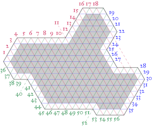
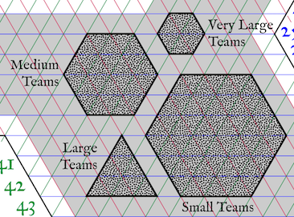

"Hurry in, hurry in; it's storming out there! Let me get you something warm to drink. What's that? Of course I know Professor Oisy. Yes, Ben's hated me since his dog choked on some fruit that fell off one of my trees. Well, actually, it happened twice, but it's—What?! He's trying to summon an elder god? To destroy the university? We must stop him! We may be able to prevent our destruction if we hurry! If we live I'll smash that fool's head with an axe!"
To prevent someone from summoning an Elder God, you need to retrieve items for your professor friend to place around campus. This field of protective objects is oriented on ancient ley lines of strange power. A map of these lines can be found below (click to enlarge):


Each ley line is associated with a quality, which are listed in a table below. The northwest-southeast lines (red) are associated with substance, the east-west lines (blue) with form, and the southwest-northeast lines (green) with meaning. In order to protect campus (represented by the grey area on the map), you need to place objects at the intersections of ley lines shown on the map. Any object must have the qualities of all three of the ley lines.
Of course, you don't have time to put an item at each intersection, and thankfully, you don't need to! An object placed at an intersection covers a shape centered on the intersection. The size of the shape depends on your team size:
- For teams of 1–15, the shape is a hexagon of radius three segments.
- For teams of 16–60, the shape is a hexagon of radius two segments.
- For teams of 61–110, the shape is a equilateral triangle with side three segments. You may orient these triangles pointed up or down as you choose, and you can mix the two orientations in your coverage.
- For teams of over 110, the shape is a hexagon of radius one segment.
See below for a visual example:


You must find enough items to cover the grey part of the map. You can cover the white areas (or even areas outside the map!), but that is not required. You may also overlap shapes if you wish.
Finally, your professor has a few small-area field inhibitors. They are able to cover one triangle each—you can use them to fill in any pesky gaps. The number you get is based on your team size:
- 1–5: 8
- 6–15: 3
- 16–25: 20
- 26–40: 15
- 41–60: 10
- 61–85: 30
- 86–110: 20
- 111–125: 35
- 126–150: 25
- Over 150: 20
When you have enough items to cover the grey part of the map, call GC, and the professor will come over and verify that your items fit the bill. Note that no item can be used for two different intersections unless you have two instances of it. (In case you were concerned, the items will not actually be placed around campus.)
Finally, a note on what makes an acceptable item. In order to property activate the energy of the ley lines, the object must have been in its state for at least two or three days. Practically speaking, therefore, the object must not have been assembled or constructed for the purposes of this puzzle. (Clearly, we cannot know this for certain. But you must be able to convince us that the object had this form before you knew of this puzzle.)
Ley lines of substance:
|
Ley lines of form:
|
Ley lines of meaning:
|